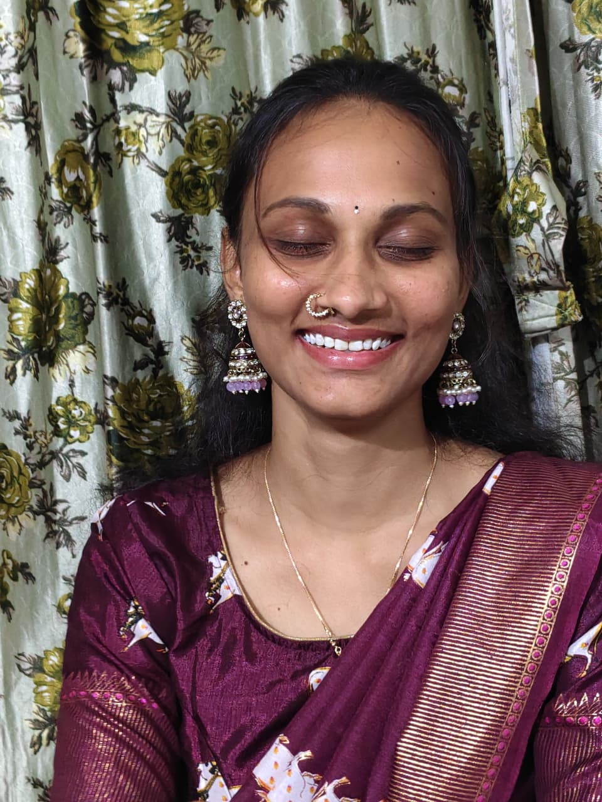
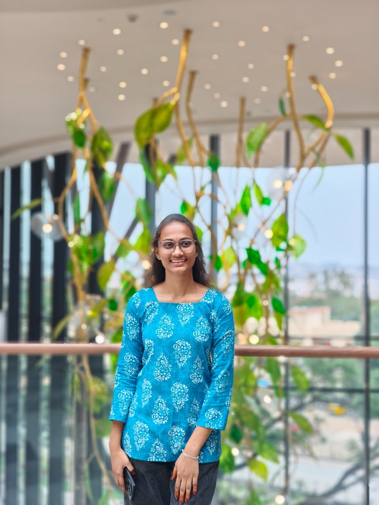
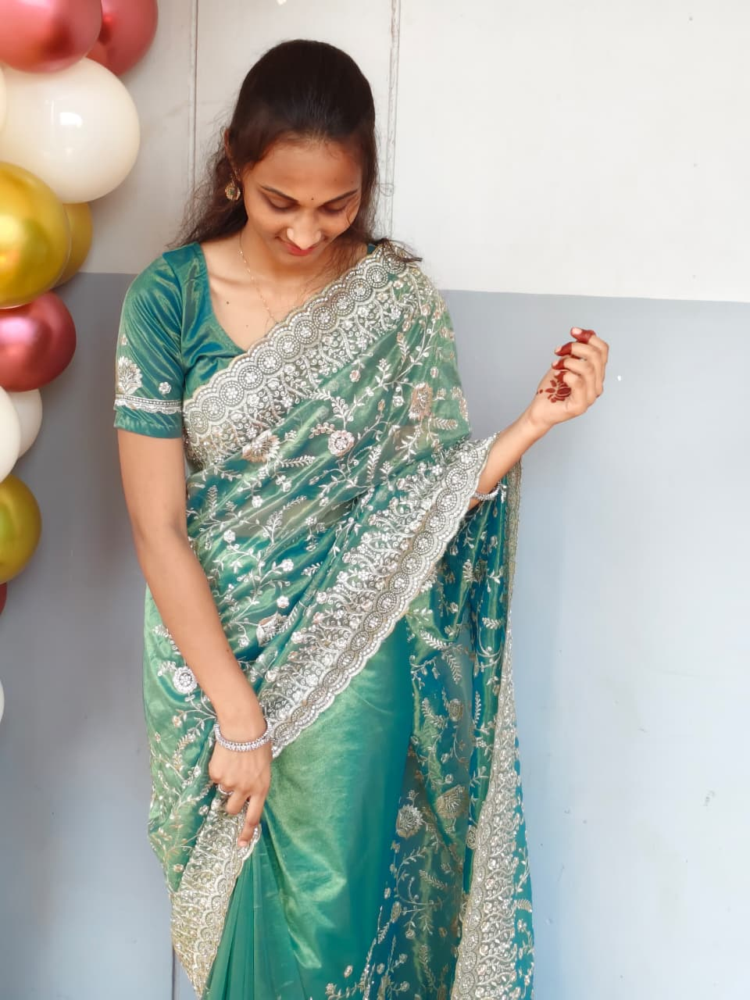
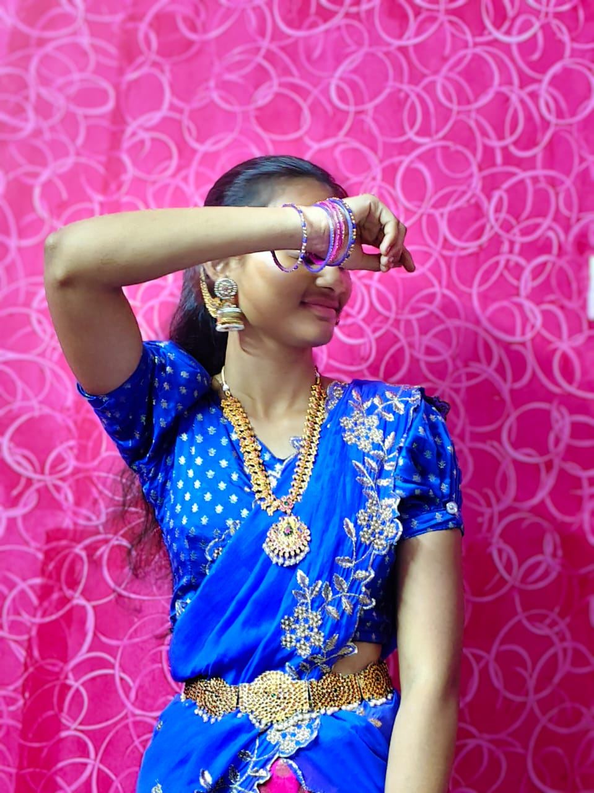

The World Is
Better With You
A digital treasure box of Bunny & Karamma's most beautiful memories — every first, every laugh, every mile between us, and every heartbeat that belongs to you.
💑 Days of Bunny & Karamma's Love Story
The Day Everything Changed
September 18th, 2025 — Our special beginning inscribed in the stars
When Two Hearts Spoke
There are moments in life so rare that the universe itself seems to hold its breath. September 18th, 2025 was one such day. The words that had lived silently inside our hearts finally found their voice — and the world felt entirely different after that.


The First Time Bunny Held Karamma's World
February 7–9, 2025 • Bengaluru → Visakhapatnam • Bunny & Karamma's First Meeting
Simhachalam Temple, Visakhapatnam
Traveling all the way from Bengaluru with a heart full of anticipation — Bunny's very first meeting with Karamma was like stepping into a dream. Together we visited the sacred Simhachalam temple, climbing those steps side by side, seeking blessings for something that had already been written in the stars.
Vizag Beaches & Parks
Day two was all about the ocean breeze, golden sand, and laughter that echoed across the water. Bunny and Karamma walked along the shores of Visakhapatnam — the waves playing a soundtrack only love could compose. The parks, the views, the little moments of looking at each other without needing any words.
Temple Visit
Simhachalam, Vizag
Open Gallery ♥Beaches & Parks
Visakhapatnam shorelines
Open Gallery ♥My Favorite Views in the World
Every photo of Karamma is a piece of art — and Bunny's most prized collection
More Beautiful Than Any Sunset
People search the world for the most beautiful things to photograph — mountains, sunsets, oceans. I found mine in Karamma's smile. These are Bunny's absolute favorites — the ones that remind me exactly why I'm so lucky to love her.
My Favorite Pics of Her
She's everything beautiful in one frame
Open Gallery ♥Warm Coffee & Warmer Hearts
Our 2nd Meet — At Her Place, Over Coffee
The Cafe Chapter
Our second meeting was intimate and beautiful — meeting at Karamma's place, sitting across from each other in a cozy cafe, watching the world outside while Bunny & Karamma's little world inside grew even more special. Every sip of coffee tasted better beside her. Every conversation felt like coming home.
That day confirmed everything Bunny already knew — Karamma is my comfort, my peace, my favorite place to be.
2nd Meet — The Café Day
Coffee, conversations & her smile
Open Gallery ♥Back to Our Favorite City
3rd Meet — Day 1: Vizag TTD Temple & Beaches

Blessings & Blue Horizons
Visakhapatnam called us back, and we answered. Our third meeting brought Bunny and Karamma to the sacred TTD temple in Vizag — seeking blessings with our hearts full of gratitude. And then, the beaches again — our ocean, our breeze, our waves.
There's something magical about Vizag with Karamma. The city seems to recognize us — as if it too has memorized Bunny & Karamma's story.
3rd Meet — TTD & Beaches
Temple blessings & ocean sunsets
Open Gallery ♥A Celebration Within a Celebration
4th Meet — Bunny's Brother's Wedding in Our Village
A Wedding We Both Remember Differently
Bunny's brother's wedding day was one of the most joyous days for our family — and it became even more special because Karamma was there. In our village, surrounded by flowers, lights, and celebration, we shared moments that belonged only to us.
While everyone celebrated one union, Bunny's heart was quietly celebrating another — the beautiful bond that grows between Bunny and Karamma every single day.
4th Meet — The Wedding
My brother's wedding • Our village
Open Gallery ♥Miles Apart, Hearts Together
Long Distance — Where a Screen Becomes a Window to You
Every Late Night Call Was Worth It
Distance can't erase what Bunny and Karamma have. Every video call — the late night ones, the "just wanted to see your face" ones, the ones where we fell asleep together even miles apart — each one is a thread woven into the fabric of us.
The screen was just a frame; the love inside it was real, warm, and infinite. These screenshots carry Bunny & Karamma's midnight laughter, the sleepy "good nights," and the quiet joy of simply existing in each other's presence.
"Counting the days until I see your face for real, Bunny… 💕"
"Miss you more than words can say, my Karamma. Good night. 🌙"
Our Screen Memories
Long-distance love, captured in screenshots
Open Gallery ♥A Garden Bunny Grew for Karamma
Flowers sent to her — every single day, with love 🌸
Daily Blooms, Daily Love
Every morning Bunny thought of his Karamma, he sent a flower — not because he had to, but because he wanted her day to begin knowing she is adored. Red roses for the passion, pink for the tenderness, yellow for the joy she brings, and white for the purity of what we share.
This is Bunny's daily garden — a collection of every bloom sent with a heart full of love, one flower at a time.
My Flower Collection
Every bloom sent to her with love 🌹
Open Gallery ♥The Journey That Brought Us Together
Bengaluru → Hyderabad → Visakhapatnam • June 2026
Two Cities, One Destination
To see you, no distance was too long. Bunny set off from Bengaluru, traveling by bus all the way to Hyderabad. The excitement of finally seeing Karamma made every mile fly by. When we finally met in Hyderabad, it was pure magic. From there, we both traveled by train from Hyderabad to Vizag. Sharing that train journey, talking for hours, watching the tracks unfold, we were traveling into our future.
Bunny had brought some special accessories and gifts for his Karamma before starting. Seeing the glow in your eyes as you opened them is a memory Bunny will carry in his heart forever.
The Journey Together
Bengaluru → Hyderabad → Visakhapatnam
Open Gallery ♥Happy Birthday Kari 💗🎀👸🏻 ✨
Some words are too precious to be spoken.
They deserve to be opened with the heart.

My Beautiful Karammmaaa ❤️,
Twenty years ago, the universe gifted this world someone truly special—you. And years later, it gifted me the greatest blessing of all: you in my life.
Before you came into my world, days were just days. But after you, everything became more beautiful. My mornings feel brighter, my heart feels fuller, and every little moment has a meaning because you're a part of it.
When I look back at our journey, every memory makes me smile. From our Bengaluru to Hyderabad adventures, our train ride to Vizag, peaceful temple visits, walking hand in hand on the beach, endless late-night video calls, and all the little moments in between... every single one is a memory I'll cherish forever. They aren't just memories—they are pieces of my happiest life.
You are my peace, my comfort, my biggest happiness, and my favorite person. Thank you for loving me, understanding me, supporting me, and making my life so incredibly beautiful.
On your special day, I pray that every dream you carry in your heart comes true. May you always smile the way you make me smile. May life bless you with endless happiness, good health, success, and all the love you deserve.
And I want you to know one thing...
No matter where life takes us, I promise to stand beside you, hold your hand through every high and low, protect you, support you, and love you with all my heart—today, tomorrow, and every day after.
Happy 20th Birthday, my beautiful Karammmaaa. ❤️
Forever and always,
P.S. — Everything above is true, every single word. But here's the part I didn't write down anywhere else: however far apart we are, however hard a day gets, you are the person I keep choosing, again and again. Forever isn't nearly long enough, Karamma. 🐰❤️